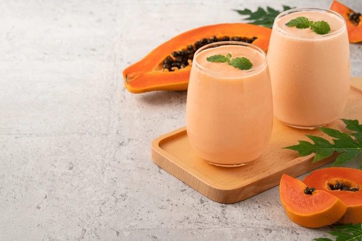

Batida de lechosa
La batida de lechosa es una de las recetas más famosas de la República Dominicana, la elegí porque me gusta y
quiero que todos la conozcan.

Ingredientes
- Hielo
- Leche
- Azúcar
- Vainilla
Pasos
- Picar la lechoza en trozos Pequeños
- Conectar la licuadora
- Echar el hielo a la licuadora
- Echar la lechosa
- Echar la leche
- Echar la azúcar
- Echar la vainilla
- Licuar todos los ingredientes
- Servir
Esta receta fue copiada de la página www.cocinadominicana.com”